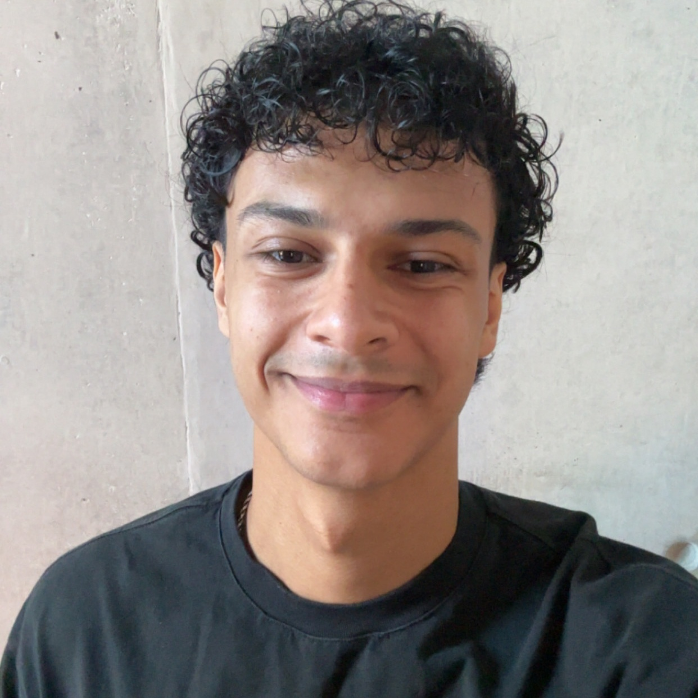

One tutor, one student, one plan. No big company, no call centre — just direct access to me, without the slow, impersonal support you get elsewhere.
No contracts. No pressure. Just a friendly chat about what your child needs.

Trusted for AQA, Edexcel & OCR GCSE Maths
Stop guessing what to revise next. We take the guesswork out of GCSE Maths revision, so every session moves your child closer to their target grade.
Stop feeling overwhelmed by scattered revision resources. We provide a clear, step-by-step plan tailored to exactly where your child is now, guiding them all the way to exam day.
Eliminate the guesswork of what to revise. Each week follows a structured, personalised plan that breaks down exactly what needs mastering to close the gaps fastest.
Never lose momentum. Through weekly sessions and direct, one-to-one feedback, your child stays consistent, motivated, and on track all the way to results day.
For every family. A dedicated tutor with a track record across 50+ students, backed by a plan that adapts every step of the way — not just hope for the best.
If your child attends every session and completes the agreed homework, and their grade hasn't improved by the end of term, I'll keep working with them at no extra cost until it does.
*Valid provided the student attends all sessions and completes all agreed homework and practice papers on time.
Kevin is a second-year Computer Engineering student at the University of Birmingham, tutoring since 2021 with over 5 years of mentoring experience. He began after family friends asked him to tutor their children, on the back of his own high GCSE grades and place at a prestigious, highly-selective secondary school. Every student gets a custom game plan and support whenever they need it.
Swipe to read more →
"Kevin has been an excellent tutor and a great support throughout my son's GCSE preparation. Each week he checks in on the areas my son is struggling with and adjusts the focus accordingly, setting practice papers and extra work that he then marks before the next session. He's approachable, communicates really well, and is always willing to go back over a topic until my child feels confident. My son has autism, and Kevin has been especially patient — working at his pace and encouraging him the whole way. I can't recommend him enough for a child of any level or need."
"The tuition services have been great. My son's tutor was Kevin for science and maths. He has been fantastic, so supportive and really encouraging. I can't recommend Kevin enough."
"A friend recommended Kevin to us, and we're really glad they did. It was easy to get set up, and we had the chance to meet Kevin beforehand, which put us at ease. He and my son have got on brilliantly, and my son has learnt a lot. Kevin's also been very flexible — once exams began, he worked around the exam timetable rather than sticking to a fixed slot, so my son always felt properly prepared going in. I'd highly recommend him to anyone looking for a tutor."
"The sessions with Kevin have really benefited our son. Great quality of teaching, well prepared, and fantastic follow-up reports, so you can see how your child is getting on. Everything is very organised in arranging tuition and payment too — great for busy parents!"
No contracts. Pause or stop anytime.
One flat rate, however often you need sessions. Book weekly, fortnightly, or just ahead of exams — no packages, no minimum commitment.
All major boards — AQA, Edexcel, and OCR. Lessons are tailored to your child's exact specification and past papers.
Sessions run online over a simple video call with a shared whiteboard — no software to install, and it's easy for parents to sit in if they'd like to.
Yes — for 1-to-1 maths tutoring, the shared whiteboard means I can work through problems in real time exactly as I would sitting next to your child, and every session is just as focused since there's no classroom distraction. It also removes travel time entirely, so that time goes straight into more practice instead.
The free call helps us meet your child exactly where they are. I've taken students from grade 3 to grade 7, not just 7 to 9.
We don't just hope for the best — I reassess the plan every 4 weeks based on practice paper results, so if something isn't clicking, we change the approach early rather than waiting until the exam to find out.
My main focus is GCSE Maths, but I'm also happy to help with Science if a student would benefit from it — just mention it on the call and we can work it into the plan.
Yes. There's no long-term contract — sessions run week to week and you can pause or stop with a week's notice.
Book a free 15-minute call below. We'll talk through your child's current level and whether Forge Tutors is the right fit — no pressure, no obligation.
Limited spots available.